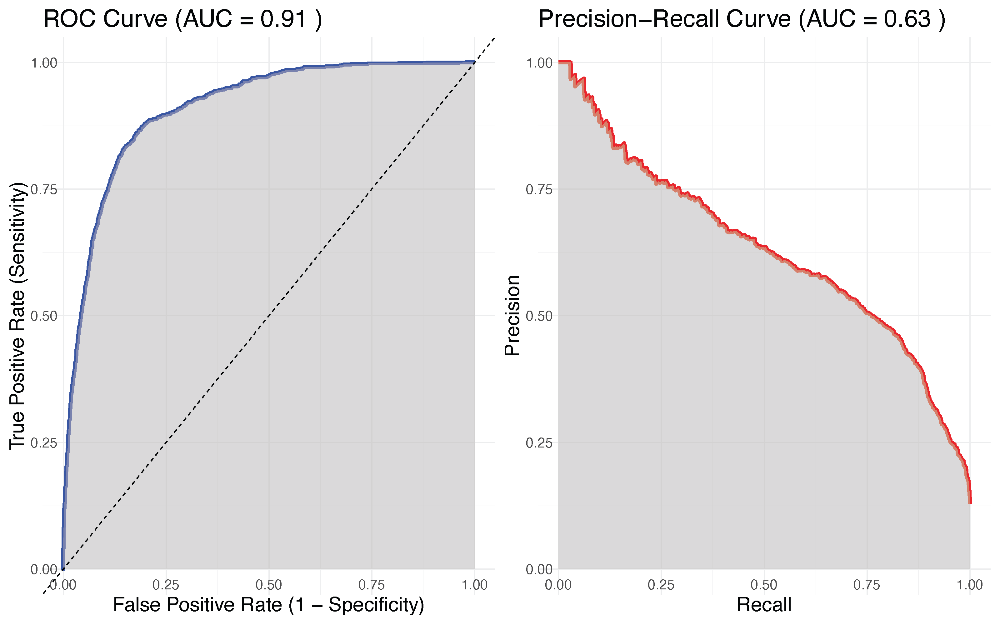
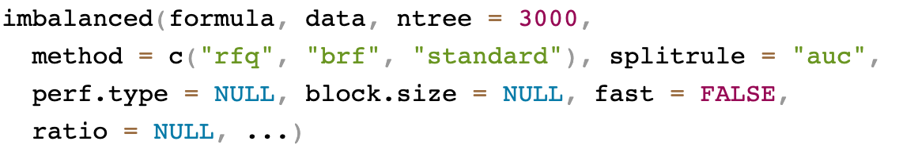
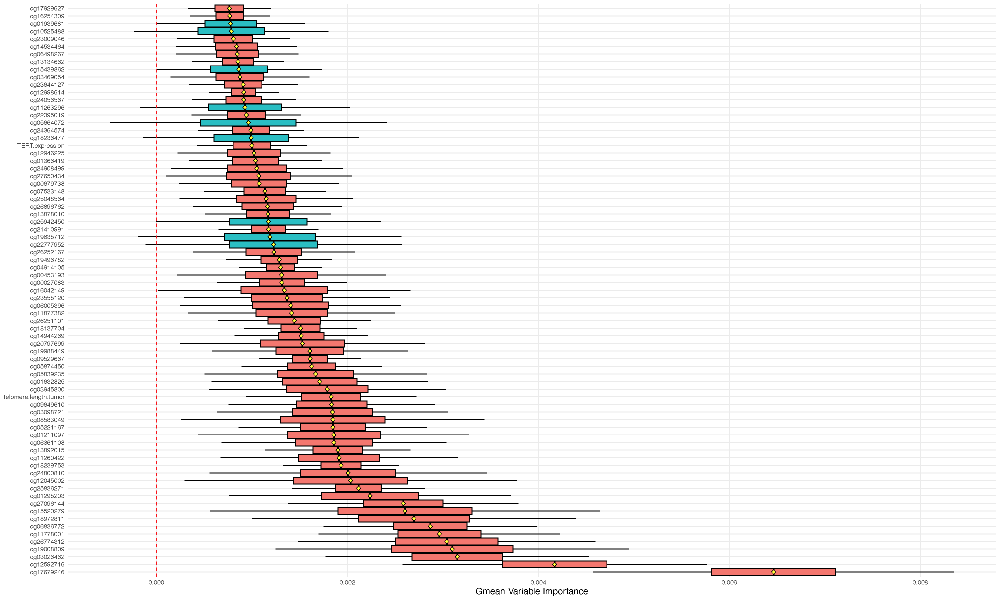
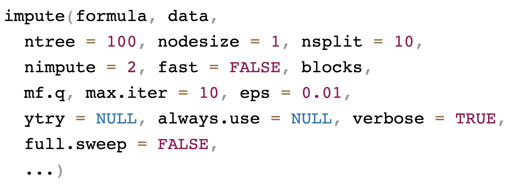
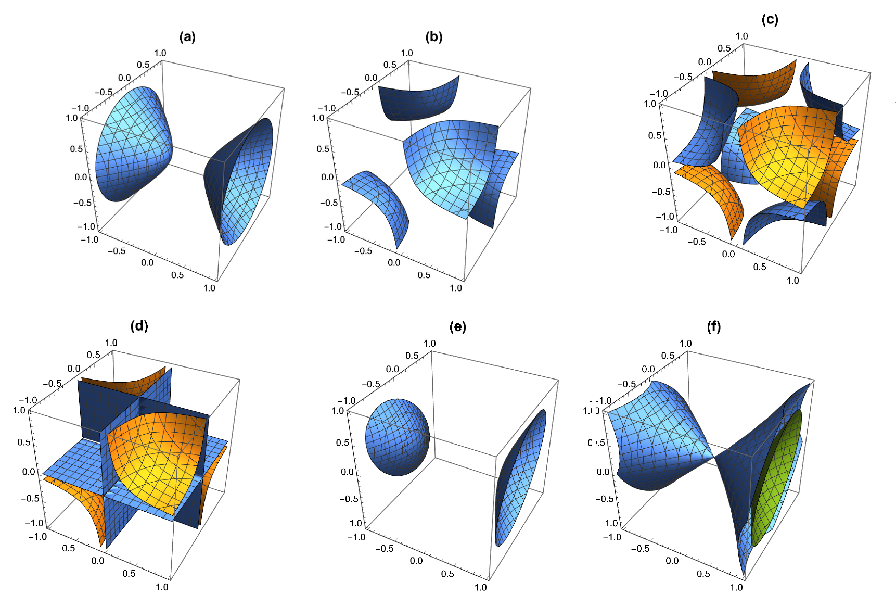
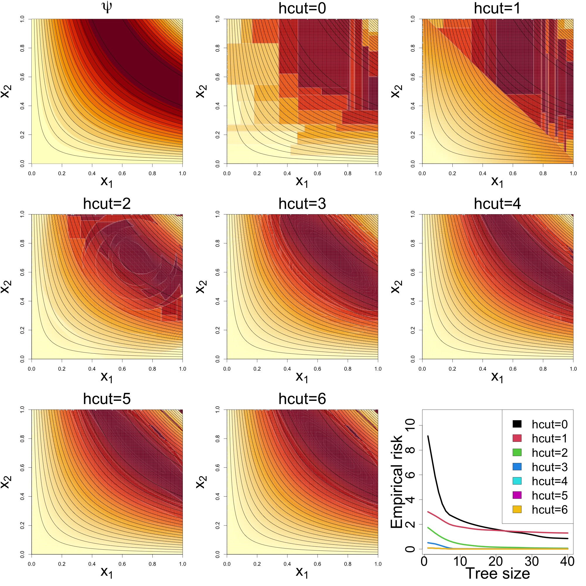
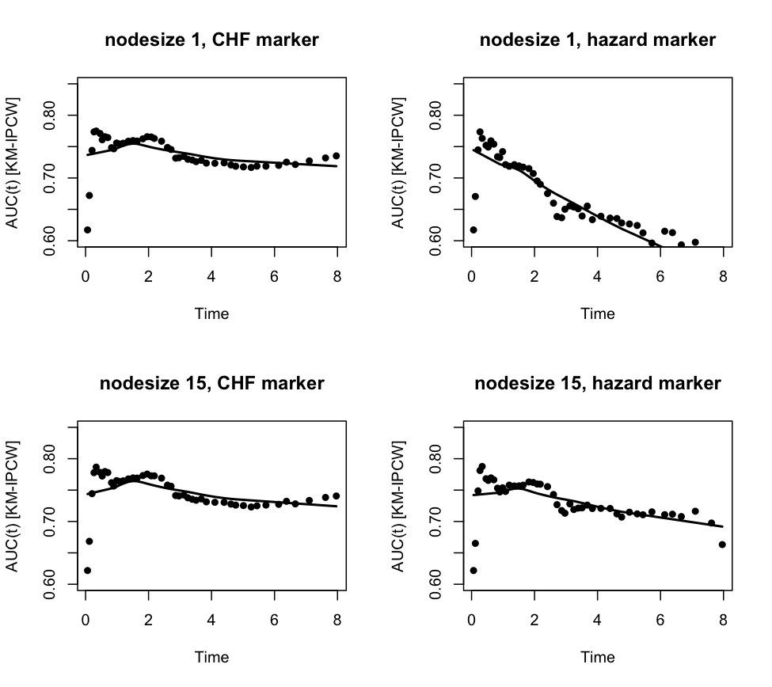
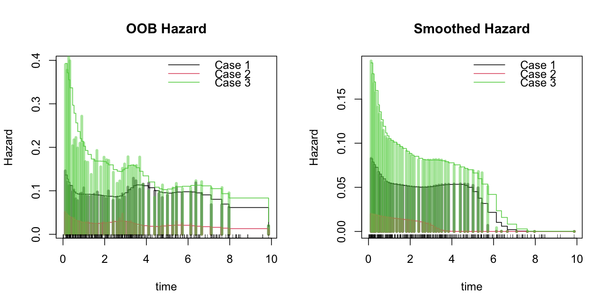
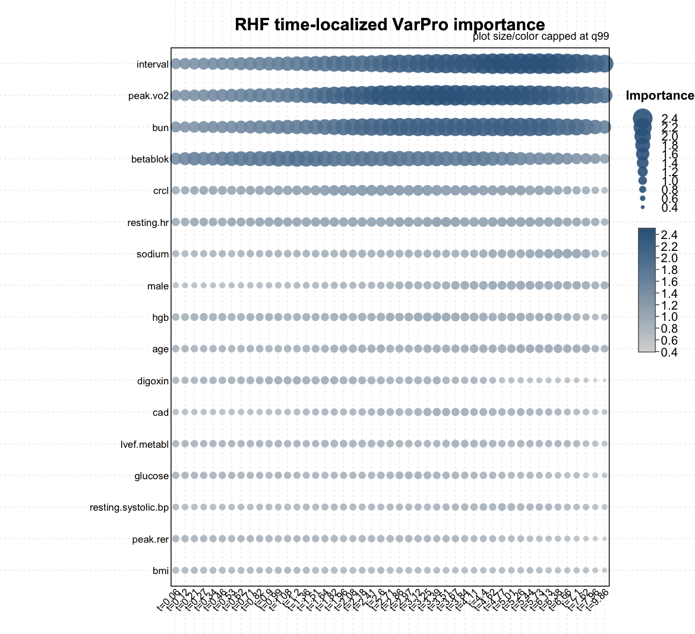
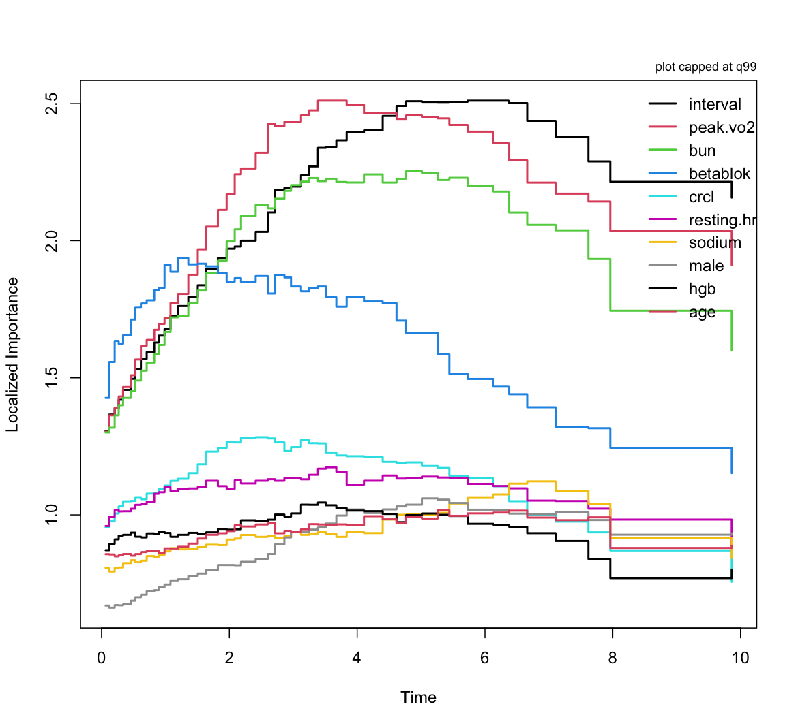

Part IV
| Family | Example Grow Call with Formula Specification |
|---|---|
| Regression Quantile Regression |
rfsrc(Ozone~., data = airquality) quantreg(mpg~., data = mtcars) |
| Classification Imbalanced Two-Class |
rfsrc(Species~., data = iris) imbalanced(status~., data = breast) |
| Survival | rfsrc(Surv(time, status)~., data = veteran) |
| Competing Risk | rfsrc(Surv(time, status)~., data = wihs) |
| Multivariate Regression Multivariate Mixed Regression Multivariate Quantile Regression Multivariate Mixed Quantile Regression |
rfsrc(Multivar(mpg, cyl)~., data = mtcars) rfsrc(cbind(Species,Sepal.Length)~.,data=iris) quantreg(cbind(mpg, cyl)~., data = mtcars) quantreg(cbind(Species,Sepal.Length)~.,data=iris) |
| Unsupervised sidClustering Breiman (Shi-Horvath) |
rfsrc(data = mtcars) sidClustering(data = mtcars) sidClustering(data = mtcars, method = "sh") |
In many real world applications, a common problem is the occurrence of imbalanced data where one class outcome (majority class, 0) is observed far more frequently than the other (minority class, 1)
Learn more [1]: https://www.randomforestsrc.org/articles/imbalance.html
An investigator studying the value of adjuvant treatment versus surgery in esophageal patients needed to apply causal techniques for their analysis. This required predicting the treatment group using patient features (treatment overlap analysis). There are \(N_0=6649\) surgery patients and \(N_1=988\) adjuvant treatment patients, giving an imbalanced ratio of \(6649/988 \approx 6.8\).
Running a RF classifier on the data, they obtained the following confusion matrix (from the OOB ensemble):
| predicted | |||
|---|---|---|---|
| surgery | adjuvant | error | |
| surgery | 6549 | 100 | .015 |
| adjuvant | 694 | 294 | .702 |
Running a RF classifier on the data, they obtained the following confusion matrix (from the OOB ensemble):
| predicted | |||
|---|---|---|---|
| surgery | adjuvant | error | |
| surgery | 6549 | 100 | .015 |
| adjuvant | 694 | 294 | .702 |
The TNR (true postive rate) and TPR (false positive rate) are: \[ \text{TNR} = \frac{6549}{6549+100}=98.5\%,\hskip10pt \text{TPR} = \frac{294}{694+294}=29.8\%,\hskip10pt \] The geometric mean (gmean) is \[ \text{gmean}=\sqrt{.985\times .298} = 54.2\% \] This is very poor, random guessing gives 0.5
Avoid using AUC, misclassification error and other standard metrics and instead use:

ROC curve and PR-AUC curve for RF classifier from esophageal study of adjuvant treatment versus surgery
The problem here (and for other ML methods) is the equal misclassification costs used by the Bayes decision rule \[ \delta(\mathbf{x})=1 \hskip5pt\text{if}\hskip5pt P\{Y = 1 \mid \mathbf{X} = \mathbf{x}\} \ge \frac{1}{2} \]
In imbalanced data, the probability of an event is very small!! Therefore, the classifier tends to classify all cases as class labels 0
Use a different threshold. In place of 0.5 (the median) we use \(\pi=P\{Y=1\}\) \[ \delta(\mathbf{x})=1 \hskip5pt\text{if}\hskip5pt P\{Y = 1 \mid \mathbf{X} = \mathbf{x}\} \ge \pi \approx \frac{N_1}{N_0+N_1} \]
This has a dual optimality property (cost-weighted Bayes optimal and maximizes TNR+TPR)

Tip
imbalanced() is useful if you have two imbalanced class labels
data(glioma, package = "varPro")
table(glioma$y)
> Classic-like Codel G-CIMP-high G-CIMP-low LGm6-GBM Mesenchymal-like PA-like
> 148 174 249 25 41 215 26
## make a super majority class
class.combine <- c("Classic-like", "Codel", "G-CIMP-high", "Mesenchymal-like")
ynew <- factor(1 * !is.element(glioma$y, class.combine))
## replace y with the new super class
glioma2 <- glioma
glioma2$y <- ynew
table(glioma2$y)
> 0 1
> 786 94 ## standard RF classifier
o1 <- rfsrc(y~.,glioma2)
print(o1)
Sample size: 880
Frequency of class labels: 0=786, 1=94
Number of trees: 500
Forest terminal node size: 1
Average no. of terminal nodes: 29.802
No. of variables tried at each split: 36
Total no. of variables: 1241
Resampling used to grow trees: swor
Resample size used to grow trees: 556
Analysis: RF-C
Family: class
Splitting rule: gini *random*
Number of random split points: 10
Imbalanced ratio: 8.3617
(OOB) Brier score: 0.03485757
(OOB) Normalized Brier score: 0.13943029
(OOB) AUC: 0.98882031
(OOB) Log-loss: 0.12614254
(OOB) PR-AUC: 0.92976788
(OOB) G-mean: 0.750886
(OOB) Requested performance error: 0.04659091, 0, 0.43617021
Confusion matrix:
predicted
observed 0 1 class.error
0 786 0 0.0000
1 42 52 0.4468
(OOB) Misclassification rate: 0.04772727
Random-classifier baselines (uniform):
Brier: 0.25 Normalized Brier: 1 Log-loss: 0.69314718## RFQ classifier
o2 <- imbalanced(y~.,glioma2)
print(o2)
Sample size: 880
Frequency of class labels: 0=786, 1=94
Number of trees: 3000
Forest terminal node size: 1
Average no. of terminal nodes: 26.6797
No. of variables tried at each split: 36
Total no. of variables: 1241
Resampling used to grow trees: swor
Resample size used to grow trees: 556
Analysis: RFQ
Family: class
Splitting rule: auc *random*
Number of random split points: 10
Imbalanced ratio: 8.3617
(OOB) Brier score: 0.03394608
(OOB) Normalized Brier score: 0.13578431
(OOB) AUC: 0.99057983
(OOB) Log-loss: 0.12099248
(OOB) PR-AUC: 0.94056031
(OOB) G-mean: 0.93762192
(OOB) Requested performance error: 0.06237808
Confusion matrix:
predicted
observed 0 1 class.error
0 691 95 0.1209
1 0 94 0.0000
(OOB) Misclassification rate: 0.1079545
Random-classifier baselines (uniform):
Brier: 0.25 Normalized Brier: 1 Log-loss: 0.69314718## BRF classifier
o3 <- imbalanced(y~.,glioma2, method = "brf")
print(o3)
Sample size: 880
Frequency of class labels: 0=786, 1=94
Number of trees: 3000
Forest terminal node size: 1
Average no. of terminal nodes: 15.208
No. of variables tried at each split: 36
Total no. of variables: 1241
Resampling used to grow trees: swr
Resample size used to grow trees: 188
Analysis: RF-C
Family: class
Splitting rule: auc *random*
Number of random split points: 10
Imbalanced ratio: 8.3617
(OOB) Brier score: 0.04790004
(OOB) Normalized Brier score: 0.19160015
(OOB) AUC: 0.9861269
(OOB) Log-loss: 0.1954276
(OOB) PR-AUC: 0.91991245
(OOB) G-mean: 0.91159495
(OOB) Requested performance error: 0.08840505
Confusion matrix:
predicted
observed 0 1 class.error
0 758 28 0.0356
1 13 81 0.1383
(OOB) Misclassification rate: 0.04659091
Random-classifier baselines (uniform):
Brier: 0.25 Normalized Brier: 1 Log-loss: 0.69314718## gmean variable importance with ci
o2 <- imbalanced(y~.,glioma2, importance="permute", block.size=20)
oo2 <- subsample(o2)
plot.subsample(oo2)
Missing data can be imputed at various stages of the analysis
na.action="na.impute" in rfsrcna.action="na.impute" in predictimputeimpute.learnImputing missing training data with impute (and impute.learn)
Imputing missing testing data with impute.learn

ytry variables which act as pseudo-responsesThe imputation problem is turned into a series of regression problem
impute.learnThere are four principal functions
The following uses the airquality data as a toy example
aq <- airquality[, c("Ozone", "Solar.R", "Wind", "Temp", "Month")]
id <- sample(seq_len(nrow(aq)), 100); train <- aq[id, ]; test <- aq[-id, ]
## imputation/training
fit <- impute.learn(
data = train,
mf.q = 1,
max.iter = 5,
full.sweep.options = list(ntree = 25, nsplit = 5),
target.mode = "all"
)
## test time imputation
test.imp <- predict(fit, test, max.predict.iter = 2)impute() workflow, but several arguments play a special role for test-time usetarget.mode = "all" is recommended here because it makes the learned imputer robust to missingness that may occur later in variables thatOOD detection (anomaly detection) means several things, depending on the goals:
We answer this by asking
Can each observed part of the row be predicted from the other parts as well as it could be in training?
We address all three goals using impute.ood
aq <- airquality[, c("Ozone", "Solar.R", "Wind", "Temp", "Month")]
id <- sample(seq_len(nrow(aq)), 100); train <- aq[id, ]; test <- aq[-id, ]
## supervised training and imputation
sup.fit <- impute.learn(
data = train,
mf.q = 1,
supervised.formula = Solar.R ~ .,
supervised.args = list(ntree = 50, nsplit = 5),
full.sweep.options = list(ntree = 25, nsplit = 5),
save.ood = TRUE
)
## test time scoring and imputation
ood <- impute.ood(sup.fit, test)
print(head(ood$score))
[1] 0.3426349 0.1992188 0.8819692 0.7183163 0.4520101 0.6757812
print(head(ood$score.percentile))
[1] 0.2226562 0.0546875 0.9375000 0.7148438 0.3046875 0.6445312CART splits one variable at a time — a restriction that is often too coarse for biomedical data, where the outcome typically depends on combinations of variables
To handle this, CART must stack many rectangular cuts, producing trees that are
SGTs use rich geometric cuts to directly estimate multivariate relationships [2]
SGTs use rich geometric cuts to directly estimate multivariate relationships
\[ \widehat\beta_A \;=\; \arg\min_{\beta}\; \sum_{i\in A} L\!\left\{Y_i,\beta^{T}\phi_A(X_i)\right\} \;+\;\lambda\,|\beta|_1 \]
\[ A_L(c)=\{x\in A : s_A(x)\le c\},\qquad A_R(c)=A\setminus A_L(c) \]
CART is a special case; SGT also allows much more general splits

randomForestSGT packagerfsgt fits SGT forests. Parametric models used for splitting are indexed by hcut:
hcut = 0 — CART splittinghcut = 1 — (hyperplane) linear model using all variableshcut = 2 — (ellipse) plus all quadratic termshcut = 3 — (oblique ellipse) plus all pairwise interactionshcut = 4 — plus all polynomials of degree 3 of two variableshcut = 5 — plus all polynomials of degree 4 of three variableshcut = 6 — plus all three-way interactionshcut = 7 — plus all four-way interactionsOther key parameters
treesize and nodesize control tree complexityfilter and tune.hcut for dimension reductionpure.lasso to over-ride CARThcut
hcutUse Friedman 1 simulation with noise variables to study hcut
# Simulate data
n <- 2500
p <- 50
noise <- matrix(runif(n * p), ncol = p)
dta <- data.frame(mlbench:::mlbench.friedman1(n, sd = 0), noise = noise)
# Tune hcut
filter <- tune.hcut(y ~ ., dta, hcut = 3)filter object contains results from fitting shallow forests under different hcut values (here the maximum is set to 3)hcutrfsgt via the filter argument to use the optimized hcut with pre-selected basis functions# Use tuned hcut and pre-selected bases
print(rfsgt(y ~ ., dta, filter = filter))
Sample size: 2500
Tree sample size: 1580
Number of trees: 100
Average tree size: 100
Average node size: 15.8
Total no. of variables: 5
Family: regr
Splitrule: sg.regr
hcut: 3
hcut-dimension: 14
OOB R-squared: 0.9813015
OOB standardized error rate: 0.01869852
OOB error rate: 0.4244172hcut familiesRandom forests is obtained by setting hcut = 0
print(rfsgt(y ~ ., dta, filter = use.tune.hcut(filter, hcut = 0)))
Sample size: 2500
Tree sample size: 1580
Number of trees: 100
Average tree size: 317.33
Average node size: 4.982255
Total no. of variables: 5
Family: regr
Splitrule: sg.regr
hcut: 0
hcut-dimension: 5
OOB R-squared: 0.9175811
OOB standardized error rate: 0.0824189
OOB error rate: 1.870736Predicted values arise from a local polynomial built from partial effects that we can extract
Grow a shallow forest and enforce the lasso
## compare yhat to OOB values from forest object
print(head(yhat))
[1] 18.141112 15.241789 21.836746 7.638041 16.031982 15.691202
print(head(o$predicted.oob))
[1] 18.141112 15.241789 21.836746 7.638041 16.031982 15.691202
## beta values
print(head(beta[, 1:6]), digits = 2)
x.1 x.2 x.3 x.4 x.5 x.1_SQ2_
[1,] 30.24 29.644 -14 10.5 6.0 -14.99
[2,] 31.31 30.158 -15 9.8 5.9 -16.10
[3,] 42.54 41.280 -18 6.7 1.1 -19.35
[4,] 0.17 0.083 -19 9.2 4.5 -0.35
[5,] 31.51 29.523 -15 9.8 5.8 -16.18
[6,] 32.50 30.826 -15 10.8 6.2 -16.63
## partial effect values
print(head(partial[, 1:6]), digits = 2)
x.1 x.2 x.3 x.4 x.5 x.1_SQ2_
[1,] 17.724 24.202 -2.3 2.9 4.48 -5.1484
[2,] 9.697 27.889 -11.1 6.4 1.36 -1.5438
[3,] 32.519 28.518 -4.2 5.1 0.66 -11.3120
[4,] 0.019 0.074 -9.4 1.5 2.58 -0.0046
[5,] 2.405 22.660 -5.7 9.1 3.86 -0.0943
[6,] 2.958 25.281 -15.2 7.1 1.66 -0.1377Physiology, medications, laboratory values, device measurements, exposures, and symptoms can all evolve during a patient’s follow-up — a baseline-only model uses one snapshot of this information
A dynamic hazard model uses the patient’s longitudinal covariate trajectory. The randomForestRHF (RHF) package is designed for this
The four response columns have the following meaning
| Column | Meaning |
|---|---|
id |
Subject identifier. Repeated rows correspond to the same subject. |
start |
Beginning of the interval. |
stop |
End of the interval. Must be larger than start. |
event |
Event indicator at the end of the interval (1 = event, 0 otherwise). |
id start stop event iv_biltc bili_tc iv_cretc crea_tc cardin_l
6 0.000 0.003 0 0.00 1.9 0.000 1 4
6 0.003 0.005 0 0.00 1.9 0.003 1 4
6 0.005 0.008 0 0.00 1.9 0.005 1 4
6 0.008 0.011 0 0.00 1.9 0.008 2 4
6 0.011 0.014 0 0.01 1.3 0.011 2 4
7 0.000 0.287 0 0.00 0.6 0.000 2 7
7 0.287 0.517 0 0.29 0.7 0.287 1 7
7 0.517 0.767 0 0.52 0.6 0.517 1 7
7 0.767 1.016 0 0.77 0.8 0.767 1 7
7 1.016 1.448 0 1.02 0.5 1.016 1 7rhf also works with standard survival data where each subject has a single observed time and predictors are fixed at baseline
The helper convert.counting() converts this data into counting-process format
Print the results to check that everything is fine
Number of records: 2,231
Sample size (unique IDs): 2,231
Average records per ID: 1
Number of deaths/events: 726
Number of trees: 500
Average tree size (leaves): 89.234
Average node size: 15.845
No. features tried at each split: 7
Total no. time-varying features: 0
Total no. features: 39
Family: surv-tdc
Splitrule: sg.tdc
No. of random splits: 10
OOB risk: 0.151
TDC analysis: NO (records per ID = 1)RHF supports time-dependent AUC-\(t\) via auct.rhf() with CHF or hazard markers
## try different nodesizes
fit.n1 <- rhf(f, d, nodesize = 1)
fit.n15 <- rhf(f, d, nodesize = 15)
## AUC-t with chf/hazard markers
auc.n1.chf <- auct.rhf(fit.n1)
auc.n1.haz <- auct.rhf(fit.n1, marker = "haz")
auc.n15.chf <- auct.rhf(fit.n15)
auc.n15.haz <- auct.rhf(fit.n15, marker = "haz")
## plot AUC-t curves
ylim <- c(0.6, 0.85)
par(mfrow = c(2, 2))
plot(auc.n1.chf, ylim = ylim, main = "nodesize 1, CHF marker")
plot(auc.n1.haz, ylim = ylim, main = "nodesize 1, hazard marker")
plot(auc.n15.chf, ylim = ylim, main = "nodesize 15, CHF marker")
plot(auc.n15.haz, ylim = ylim, main = "nodesize 15, hazard marker")
Display OOB case-specific hazard and a smoothed version for specific patients
## smoothed hazard
shaz.n15 <- smoothed.hazard(fit.n15)
## pull ids for first 3 patients
id <- fit.n15$ensemble.id[1:3]
## display OOB/smoothed hazards
par(mfrow = c(1, 2))
plot(fit.n15, idx = id, main = "OOB Hazard")
plot(shaz.n15, idx = id, main = "Smoothed Hazard")
importance.rhf uses a running time-window to calculate time-dependent VarPro importance
## time-localized RHF importance (across the full time grid)
imp.t <- importance.rhf(fit.n15)
## different ways to visualize time-dependent importance
plot(imp.t, type = "dotmatrix")
plot(imp.t, type = "lines")

Part II: Inference and Prediction